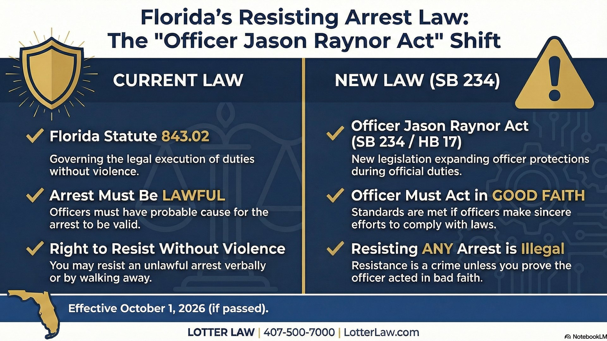

Florida's Officer Jason Raynor Act: What It Means for Your Right to Resist an Unlawful Arrest

Right now, Florida law creates a balance between citizens and law enforcement during arrests. Citizens cannot use force to resist a lawful arrest. But officers cannot use force to carry out an arrest they know is unlawful. The Officer Jason Raynor Act (SB 156) destroys that balance. It deletes the officer accountability provision, overrules a Florida Supreme Court decision, and turns the statute into a one-way street.
The Current Law: Florida Statute 776.051
Florida Statute 776.051, titled "Use or threatened use of force in resisting arrest," has two subsections that create a balance between citizen obligations and government limits.
Subsection (1) - Citizen Obligation
"A person is not justified in the use or threatened use of force to resist an arrest by a law enforcement officer, or to resist a law enforcement officer who is engaged in the execution of a legal duty, if the law enforcement officer was acting in good faith..."
That makes sense. If the officer is acting in good faith and executing a legal duty, you cannot use force to resist. Nobody argues with that.
Subsection (2) - Officer Limitation
"A law enforcement officer... is not justified in the use of force if the arrest or execution of a legal duty is unlawful and known by him or her to be unlawful."
This is the part most people don't know about. If the officer knows the arrest is unlawful, the officer is not justified in using force against you. Both sides have limits. That's the deal.
In 2006, the Florida Supreme Court in Tillman v. State, 934 So. 2d 1263, ruled that Section 776.051(1) is limited by its plain terms to situations involving an actual arrest. It does not extend to detentions, pat-downs, or other police encounters. The court reaffirmed this holding in Perry v. State, 953 So. 2d 459 (Fla. 2007).
What the Officer Jason Raynor Act Changes
The bill makes three fundamental changes to Florida Statute 776.051:
- Removes the "legal duty" requirement: The bill changes "execution of a legal duty" to "performance of official duties." The word "legal" disappears. The arrest no longer needs a legal basis - the officer just needs to be performing "official duties."
- Adds "detention" - overruling the Florida Supreme Court: The bill adds the word "detention" to the statute, expanding its scope to cover detentions for the first time. This directly and legislatively overrules the Florida Supreme Court's holdings in Tillman (2006) and Perry (2007), which limited 776.051 to actual arrest situations only.
- Deletes officer accountability entirely: The bill strikes Subsection (2) in its entirety. The provision that said officers are not justified in using force during knowingly unlawful arrests is simply gone. Not modified. Not replaced. Deleted.
The bill also codifies a definition of "good faith" that did not previously exist: "sincere and reasonable efforts to comply with legal requirements, even if the arrest, detention, or other act is later found to have been unlawful."
The One-Way Street
Under current law, there's a deal: citizens can't fight lawful arrests, and officers can't force unlawful ones. Under this bill, citizens keep every obligation to comply, but the officer's corresponding obligation to act lawfully is deleted. That's not a balance anymore. That's a blank check.
What Does "Good Faith" Actually Mean?
Under the current version of 776.051, the statute requires both "good faith" and "execution of a legal duty." The bill keeps the good faith requirement but removes the legal duty requirement, and adds a codified definition that didn't previously exist: "sincere and reasonable efforts to comply with legal requirements, even if the arrest, detention, or other act is later found to have been unlawful."
Consider this scenario: An officer pulls you over because you "look suspicious." They have no traffic violation, no reasonable suspicion of a crime - just a hunch. They order you out of the car and arrest you for "obstruction" when you ask why you're being detained.
- Under current 776.051: Subsection (2) limits the officer's use of force because the arrest is unlawful and the officer knows it. The arrest fails the "legal duty" requirement. The balance holds.
- Under the new bill: Subsection (2) no longer exists. The officer only needs to be performing "official duties" in "good faith" - and good faith is defined to cover even unlawful arrests. You must comply. The officer faces no statutory limit on force.
The practical problem: proving an officer acted in "bad faith" requires showing they knew they were acting unlawfully and did it anyway. That's nearly impossible to prove without body camera footage showing the officer explicitly acknowledging the illegality. Meanwhile, the provision that actually checked officer conduct - Subsection (2) - is gone.
Why Is This Bill Being Proposed?
The bill is named after Officer Jason Raynor, a 26-year-old Daytona Beach police officer who was fatally shot in June 2021. Officer Raynor's death was a tragedy, full stop. But what happened to him was murder - not resisting arrest. No one has ever successfully argued that shooting a police officer is justified resistance under 776.051. That "loophole" doesn't exist and never did.
The bill is being sold as "closing a loophole," but what it actually does is tip the balance entirely in one direction. Citizens keep every obligation. Officers lose every statutory limit. That's not closing a loophole - it's using a murdered officer's name to expand police authority over people who were never a threat.
This is the third attempt to pass this legislation. The bill is sponsored by Rep. Jessica Baker (R-Jacksonville) in the House and Sen. Tom Leek (R-St. Augustine) in the Senate. The Senate version passed 31-4 in January 2026 and is now before the House. Public records show 10 registered lobbyists supporting the bill - 8 representing the Florida League of Cities (municipalities that employ police departments), 1 representing the Florida Sheriffs Association, and 1 representing a regional transit authority.
Bill Status (as of February 2026)
- SB 156: Passed Florida Senate 31-4 on January 29, 2026
- HB 17: On House Second Reading Calendar
- Effective Date: October 1, 2026 (if passed)
Track the bill's progress: SB 156 on Florida Senate Website | HB 17 on Florida House Website
What Rights Do You Still Have?
You can still verbally assert your rights. Saying "I do not consent to this search," "I'm invoking my right to remain silent," or "I want a lawyer" is not resisting. Those are constitutionally protected statements, and nothing in this bill changes that.
The bill also preserves the right to defend yourself against excessive force. Florida courts have consistently held that if an officer uses unreasonable force - even during a lawful arrest - you have the right to defend yourself proportionally. However, this creates a dangerous gray area in practice.
What changes under this bill is physical noncompliance - what law enforcement training calls "passive resistance." Under current 776.051, if the arrest is unlawful and the officer knows it, the officer is not justified in using force against your noncompliance. Under the new bill, that check is gone:
- Still protected: Verbally asserting your rights, requesting a lawyer, refusing consent to a search
- Still protected: Using reasonable force to defend against excessive force during any encounter
- At risk under the new bill: Going limp, sitting down, refusing to stand, or any physical noncompliance during a detention or arrest - even one the officer knows is unlawful
The Reality Check
This bill solves a problem that barely exists. The number of successful passive-resistance-to-unlawful-arrest defenses in Florida is tiny. Officers already have tasers, backup, body cameras, qualified immunity, and the full weight of the State Attorney's office. They are not helpless against someone who says "I don't think this arrest is legal."
What the bill removes is the one statutory check ordinary citizens have in the moment. In a state built on individual freedom - a state where we pride ourselves on government not pushing you around without a reason - that should concern everyone regardless of politics.
The Florida Senate Black Caucus raised concerns about the bill, arguing it could give officers "unchecked authority." In response, sponsors added the "good faith" language - but as discussed above, that definition covers even unlawful arrests. The bill passed the full Senate with only four dissenting votes.
The Practical Effect
If this bill passes, the safest legal advice becomes: comply first, challenge later. Even if you believe an arrest is completely unlawful, your remedy moves from the street to the courtroom. Assert your rights verbally. Document everything. Call a lawyer. Fight it in court.
Other Changes in the Bill
The Officer Jason Raynor Act doesn't just rewrite 776.051. It also amends Florida Statute 843.01 (resisting with violence), changing the requirement from "lawful execution of a legal duty" to "performance of official duties" - the same language swap. Additional changes include:
- Mandates life without parole for anyone convicted of manslaughter of a law enforcement officer
- Increases penalties for battery, aggravated battery, and assault against officers
- Expands protected personnel to include correctional officers, probation officers, and auxiliary officers
Notably, the bill does not amend Florida Statute 843.02 (resisting without violence). That charge still requires proof that the officer was engaged in the "lawful execution of a legal duty." However, the changes to 776.051 and 843.01 significantly narrow the defenses available in cases involving any physical contact or force.
What This Means for You
If this bill becomes law, the balance that has existed in Florida law - where both citizens and officers have limits during arrests - becomes a one-way street. Here's how to protect yourself:
- Comply first, challenge later - even if you know the arrest is unlawful, your remedy moves to the courtroom
- Assert your rights verbally - "I do not consent to this search," "I want a lawyer," "I'm invoking my right to remain silent" are still protected
- Do not physically resist - going limp, sitting down, pulling away could all be charged under the expanded statute
- Document everything - note officer names, badge numbers, witnesses
- Call a lawyer - the legality of the officer's actions still matters for your defense
Charged with Resisting Arrest?
Whether under current law or the new provisions, the legality of the officer's actions still matters to your defense. Resisting arrest charges often have viable defenses - especially when the underlying arrest or detention was unlawful.
Contact Lotter Law at 407-500-7000 for a free consultation. As a former law enforcement officer and criminal defense attorney, I've handled hundreds of these cases from both sides - and I know when the line has been crossed.

Jeff Lotter
Criminal Defense Attorney | Former State Trooper
Jeff Lotter is an Orlando criminal defense attorney and former Florida Highway Patrol trooper. He uses his law enforcement background to build stronger defenses for clients facing charges like resisting arrest.
Related Articles
Resisting an Unlawful Arrest: Your Rights in Florida
Current law on when you can legally resist (while it still applies).
Your Rights During a Traffic Stop
What you're required to do - and what you're not.
Motion to Suppress: What to Expect
How to challenge evidence from an unlawful arrest in court.
Florida Privacy Rights Beyond Miranda
Constitutional protections that still apply.